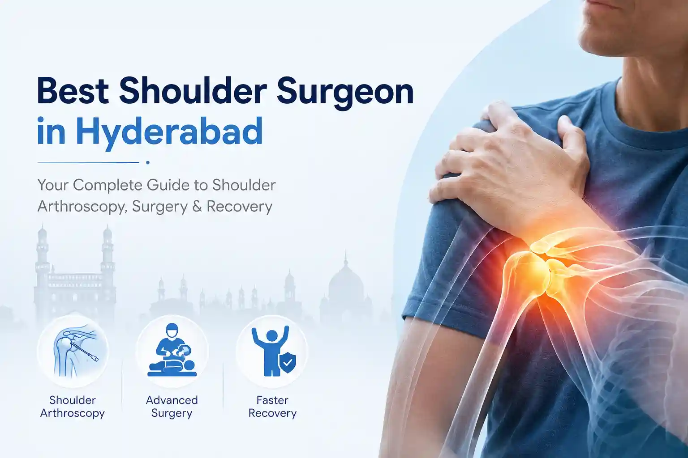

WHO WE ARE
Pioneers in Orthopedic Excellence
WE ARE THE PIONEER IN POPULARIZING NEW STANDARDS, BRINGING THE BEAM OF HOPE IN OUR PATIENTS WITH A 45 YEARS LEGACY IN ORTHOPEDIC.
Best
Orthopedic Doctor in Hyderabad
Best Orthopedic Surgeon
Senior orthopedic surgeon trained at Germany, expert in trauma and spine surgery.
Exceptional Credentials
M.S (Orthopaedics) Gold Medalist from Osmania University, M.Ch Orthopedics from Usaim.
Record Breaking Experience
26 years experience, 10,000+ joint replacements, arthroscopic reconstructions & spine surgeries.